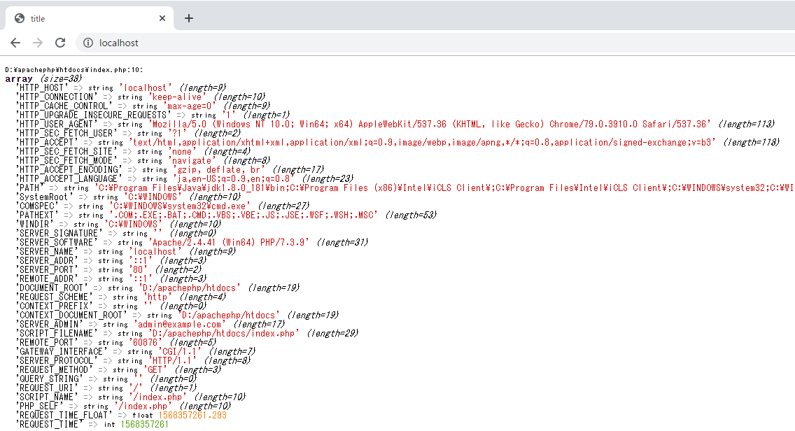

[PHP] $_SERVER, $GLOBALS, $_GET, $_POST, $_REQUEST, $_COOKIE, $_SESSION, $_FILES, $_ENV(getenv())
こんにちは。明月です。
PHPのはウェブスクリプト言語です。ウェブサービスを立ち上がってウェブブラウザと連携すれば様々な情報をブラウザから受け取ります。
例えば、ウェブサービスの環境情報やブラウザからのrequest情報、セッション、クッキーなどの情報がありますね。
それをPHPは「$_SERVER, $GLOBALS, $_GET, $_POST, $_REQUEST, $_COOKIE, $_SESSION, $_FILES, $_ENV(getenv())」の変数でサーバとクライアント間で発生した情報を取得するのができます。
上の変数を理解するようにはウェブ環境の理解が少し必要です。
ウェブとは簡単に考えるとウェブサーバとブラウザ間で非同期通信するプログラムです。ブラウザからurlのアドレスでウェブページをサーバに要請(request)するとサーバの場合はその要請によってhtmlファイルを作成してブラウザに応答(response)します。
すごくシンプルな形式でその以外のファイルはファイルサーバみたいにイメージやjavascriptファイル(.js)、Style Sheetファイル(.css)をダウンロードして、ブラウザで動作するし(javascript)、デザインを描画(styel sheet)、イメージを表示するなどの動作します。
ブラウザからウェブサーバに要請するタイプは２つがあります。それはGET方式とPOST方式があります。GETの場合はブラウザのURLの中でクエスチョンマークの区切りでデータをURLに付けサーバに要請するタイプです。
POSTの場合はデータをプロトコールのヘッダに含めて要請するタイプですね。
各サーバとブラウザにはプログラム実行中でデータを格納して使っていますが、ブラウザ側でデータを持っていることをクッキー(Cookie)というし、サーバ側にデータを持っているのはセッション(session)といいます。
しかしブラウザ単位でどのセッションを使うかの設定はブラウザ側のクッキーの格納して要請するたびにセッションキーでサーバ側のセッションを持って来て使う流れで運用しています。
すごくシンプルに説明しましたが、詳細のは下記のところで確認してください。
link - https://developer.mozilla.org/ja/docs/Web/HTTP/Overview
$_SERVER
link - https://www.php.net/manual/en/reserved.variables.server.php
$_SERVERの変数ではサーバの環境設定に関するデータがあります。
<!DOCTYPE html>
<html>
<head><title>title</title></head>
<body>
<!-- $_SERVER変数をデバッグ関数で出力する。 -->
<?php var_dump($_SERVER);?>
</body>
</html>

$_SERVER変数をvar_dumpに確認するとデータが多いですね。
この中でよく使えるデータは「DOCUMENT_ROOT」と「SERVER_NAME」、「HTTP_HOST」、「HTTP_ACCEPT」などがありますね。特に「$_SERVER["DOCUMENT_ROOT"]」の場合は物理的にサーバの中のファイルを読み出す時やPHPファイルincludeなどをする時によく使います。
OS情報があれば良いと思いますが、OS情報はないですね。
$GLOBALS
link - https://www.php.net/manual/en/language.variables.superglobals.php
$GLOBALSは流れているセッションのステップで宣言されている全ての変数です。
<?php
// $dataを宣言
$data = "test";
class Test {
private $data = "class variable";
public function setData() {
$abc = "function variable";
}
}
// テストクラスを宣言
$obj = new Test();
$obj->setData();
?>
<!DOCTYPE html>
<html>
<head><title>title</title></head>
<body>
<!-- $GLOBALS変数をデバッグ関数で出力する。 -->
<?php var_dump($GLOBALS);?>
</body>
</html>
上の出力結果をみれば、$_SERVERのデータもあります。そして$dataとTestクラスを$objで宣言しましたので、それも$GLOBALSの変数で確認できますね。
クラスのprivateの値まで確認できます。率直に全てのデータがみえる変数なのでセキュリティとしてはかなり危ない変数ですね。
この変数を間違って使用して本番ウェブサイトなどで出力されたらパスワードやサーバ情報が漏れになる可能性があります。
$GLOBALSの変数は連関配列タイプなので$GLOBALS["data"]みたいの形式でデータを読込みや書込みができます。
$_GET
link - https://www.php.net/manual/en/reserved.variables.get.php
$_GETはブラウザからGET方式で要請する時にパラメタ値を取得する変数です。
<!DOCTYPE html>
<html>
<head><title>title</title></head>
<body>
<!-- $_GET変数をデバッグ関数で出力する。 -->
<?php var_dump($_GET);?>
</body>
</html>
上の例でみるとブラウザのURLで「localhost/index.php?data=1&test=helloworld」で要請しました。
意味はlocalhostのホストサーバでindex.phpを要請します。後「?」の区切りでGET方式のパラメタデータをサーバに送ることです。
変数の区切りは「&」で「data」の値は「1」、「test」の値は「helloworld」になります。ここで注意点はGETのデータは全て文字列です。
つまり「data」の値が「1」ですが、数のデータの「1」ではなく、文字列としての「1」です。PHP側で定数値で使いたいならデータタイプ変換が必要です。
$_POST
link - https://www.php.net/manual/en/reserved.variables.post.php
要請方式でGETの場合はURLで含めて要請することならPOSTの場合はHTTPプロトコールでデータ値を含めて要請することです。
ウェブでPOSTタイプで要請するのを再現したいなら「form」タグを生成してメソッドを「POST」で設定します。「form」タグの中で「input」タグの値(value)をいれてサブミット(submit)するとPOSTタイプに要請します。
<!DOCTYPE html>
<html>
<head><title>title</title></head>
<body>
<!-- $_GET変数をデバッグ関数で出力する。 -->
<?php var_dump($_POST);?>
<!-- index.phpにPOST方式で要請する。 -->
<form method="post" action="index.php">
<!-- パラメタデータでdataとtestがある。 -->
<input type="text" name="data">
<input type="text" name="test">
<!-- サブミット(submit)ボタンを押下すると要請開始 -->
<input type="submit" value="go!">
</form>
</body>
</html>
上の例をみれば初めのイメージの結果はGET方式でウェブサイトに接続しましたので、$_POSTの値がありません。テキストボックスにデータをいれてサブミットボタンを押下するとそのデータがPOST形式でサーバに要請するのでデータが表示されることを確認できます。
POSTで変数名はinputのnameの属性で決めることになります。つまり、初めのテキストボックスはnameが「data」なので「data=1」、次は「test」なので「test=hello world」に転送します。
$_REQUEST
link - https://www.php.net/manual/en/reserved.variables.request.php
上で$_GETと$_POSTを区分してデータを取得しましたが、$_REQUESTはGET、POSTと関係しずにパラメタデータを取得する変数です。
(PHPマニュアルでは$_REQUESTで$_COOKIEの値も出ると説明していますが、筆者が確認したところでCOOKIEはでないですね。)
<!DOCTYPE html>
<html>
<head><title>title</title></head>
<body>
<?php var_dump($_GET);?>
<?php var_dump($_POST);?>
<?php var_dump($_REQUEST);?>
<form method="post" action="index.php?data=1&test1=helloworld">
<input type="text" name="data">
<input type="text" name="posttest">
<input type="submit" value="go!">
</form>
</body>
</html>
上のテキストデータで初めは「test」、２つめは「aaaa」のデータを入れてサブミットボタンを押下しました。
結果はGETデータ「data=1&test1=helloworld」とPOSTデータ「data=test&posttest=aaaa」にサーバに転送しますね。
$_REQUESTのけっかは「data」の場合はGETとPOSTの両方データがありますが、POSTの値がありますね。GETのtest1とPOSTのposttestがあります。
$_REQUESTの場合は要請方法に関係しずにデータを読み込むのができるので楽だと思いますが、POSTの値をGETのパラメタで変調が可能にみえるのでセキュリティとしてはよくないですね。
筆者もPOST、GETを使うことが楽でREQUEST変数はよく使わないですね。
$_COOKIE
link - https://www.php.net/manual/en/reserved.variables.cookies.php
cookieやsessionを理解するようにはウェブ構造に関して調べなければならないです。ここではcookieとsessionの概念を知ることで説明します。
ブラウザのcookieの値はGETやPOSTで要請する時にサーバ側に全てヘッダにつけて転送します。(ブラウザの仕様)なのでサーバ側にはクライアントのcookieの値を確認できます。
<!DOCTYPE html>
<html>
<head><title>title</title></head>
<body>
<?php var_dump($_COOKIE);?>
</body>
</html>
Javascriptでcookie設定が可能ですが、そうするとプログラムが複雑になるので、一応ブラウザのapplicationタブでcookie設定ができるので、ブラウザで設定しました。
初めのページ要請する時にはcookieの値がなかったのでnullになりましたが、dataとtestのデータを入れたら$_COOKIEの変数でデータがあることを確認できます。
$_SESSION
link - https://www.php.net/manual/en/reserved.variables.session.php
server-clientのセッション間でブラウザ側に格納するデータはcookieだと思うとsessionはサーバ側に格納するデータです。
session値はブラウザ側のcookieにあるセッションキーによってサーバ側に格納します。
<?php
session_start();
?>
<!DOCTYPE html>
<html>
<head><title>title</title></head>
<body>
<?php var_dump($_SESSION);?>
</body>
</html>
<?php
$_SESSION["sessionTest"] = "good job";
?>
PHPでsessionを使うようにはsession_start()関数を呼び出さなければならないです。session_start()関数はブラウザのcookieにセッションキーを与えてサーバ側でsessionデータを使えるように設定する役の関数です。
初めの結果イメージをみればresponseのヘッダで「Set-Cookie」にセッションキーが設定することをみれます。
link - https://www.php.net/manual/en/function.session-start.php
それをウェブページを再要請するとsessionの「sessionTest」キーで「good job」のデータがあることを確認できます。
sessionの値はサーバ側でデータを削除するかsessionがexpireになるとなくなります。
$_FILES
link - https://www.php.net/manual/en/reserved.variables.files.php
$_FILESの場合はブラウザからファイルをアップロードする時にファイルの情報がある変数です。
<!DOCTYPE html>
<html>
<head><title>title</title></head>
<body>
<?php var_dump($_FILES);?>
<form method="post" enctype="multipart/form-data">
<input type="file" name="data">
<input type="submit" value="go!">
</form>
</body>
</html>
上のタイプがfileに設定したinputオブジェクトにデータを設定してサブミットボタンを押下するとブラウザからウェブサーバにファイルをアップロードします。
実際にアップロードしたデータは$_FILES["tmp_name"]で確認すると任意フォルダに格納されますが、そこからデータをファイルコピーやファイル移動すればよいです。
詳しい説明はPHPのIOを説明する時に詳細に調べます。
$_ENV
link - https://www.php.net/manual/en/reserved.variables.environment.php
$_ENVに関してマニュアルを確認すると環境変数の設定値がある変数だと説明していますが、自分の場合は「null」がでますね。
グーグルで調べてみますが、正確な情報がないですね。
マニュアルで$_ENVとgetenv()関数は同じ役で結果も同じだと書いていますが、getenv()は値があるのに$_ENVがnull理由を分からないですね。
<!DOCTYPE html>
<html>
<head><title>title</title></head>
<body>
<?php var_dump($_ENV);?>
<?php var_dump(getenv());?>
</body>
</html>
一応、個人情報がでるのでデータをブロックしましたが、ロカールのシステム環境変数データが表示されます。
環境変数データはシステム環境変数をいうことです。
- [PHP] エラーページ処理方法(追加: ob_cleanとdie関数使用方法)2020/01/29 03:00:00
- [PHP] 分散設定ファイル(.htaccess) 使用方法2020/01/28 03:00:00
- [PHP] データベース(mariaDB)を連結して使う方法2020/01/24 03:00:00
- [PHP] IOに関して2020/01/23 03:00:00
- [PHP] requireとinclude、そして「@」の使用方法2020/01/22 03:00:00
- [PHP] Fatal及びNotice,、Warningメッセージ処理する方法2020/01/19 03:00:00
- [PHP] xDebug設定する方法2020/01/18 03:00:00
- [PHP] $_SERVER, $GLOBALS, $_GET, $_POST, $_REQUEST, $_COOKIE, $_SESSION, $_FILES, $_ENV(getenv())2020/01/17 03:00:00
- [PHP] データ確認関数(var_dump, debug_zval_dump, print_r)2020/01/16 03:00:00
- [PHP] 例外処理(try ~ catch ~ finally)2020/01/15 03:00:00
- [PHP] 配列とリスト(list)2020/01/14 03:00:00
- [PHP] インタフェースと抽象クラス、クラス継承、parent、this2020/01/13 03:00:00
- [PHP] functionとclass使用方法、アクセス修飾子、そしてstatic2020/01/09 23:35:27
- [PHP] 基本ページ作成方法と変数使用方法2020/01/06 23:44:20
- [PHP] Composer設定2019/12/27 08:49:09
- [C#] 53. Reflection機能を使い方 - Propertyとevent2021/10/19 21:02:58
- [Project design] プログラム制作(コーディング) - 関数作成方法2021/10/19 21:01:32
- [CentOs] ジェンキンス(Jenkins)をインストールする方法2021/10/18 18:28:58
- [Project design] 詳細設計(インターフェース設計と抽象化作業)2021/10/18 18:23:15
- [Project design] 基本設計(画面設計とDB設計)2021/10/17 21:21:11
- [Design pattern] 1-4. デザインパターンの抽象ファクトリーパターン(Abstract factory pattern)2021/10/15 19:31:03
- [Project design] 要件定義(要求事項整理)2021/10/15 19:28:58
- [C#] 52. Reflection機能を使い方 - Variable2021/10/15 19:27:37
- [Project design] プロジェクトを工程(ウォーターフォール vs アジャイル)2021/10/14 18:36:04
- [C#] 51. Reflection機能を使い方 - Method2021/10/14 18:34:21
- [C#] 50. Reflection機能を使い方 - Class2021/10/13 18:34:13
- [C#] 49. Operator(演算子)のオーバーロードを使い方2021/10/12 18:28:42
- [C#] 48. IEnumerableとIEnumerator、そしてyieldキーワード2021/10/11 19:49:33
- [C#] 47. Nugetを使い方(外部ライブラリ)とデータベース(MariaDB(Mysql))を使い方、そしてトランザクション(Transaction)2021/10/08 18:58:57
- [Window] MariaDBをインストールする方法2021/10/08 18:56:05